CS 180 Final Project: Image Quilting and Gradient Domain Fusion
Image Quilting
Texture is always an interesting topic in computer vision. This project implements the image quilting algorithm for texture synthesis and transfer, described in a SIGGRAPH 2001 paper by Efros and Freeman.
Randomly Sampled Texture
The simplest way to synthesize a texture is to randomly sample patches from the input texture and paste them together. This method, however, often results in visible seams between the patches.
The following results use patch_size of 15, and out_size of 100.
Original
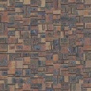
Randomly Sampled
Original
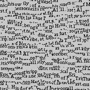
Randomly Sampled
Overlapping Patches
We can simply do better by sampling patches in size patch_size from the sample with overlap with the existings patches. We compute the cost of each patch by the sum of sqaured differences (SSD) between the overlapping regions of the existing patch and the sampled patch. At the end of this process, we copy the pixel values of the patch to the output image.
Procedure
For each patch location in the output grid (row, column):
Determine Patch Region:
Define the patch region in output as R.
Handle Overlap Mask:
Construct a binary mask mask for overlapping regions
Error Matching:
Compute the Sum of Squared Differences (SSD) between R and candidate patches in sample.
Extract the central region of the SSD to avoid edge effects.
Select Patch:
Select a candidate patch with SSD below the tolerance tol, introducing randomness.
Update Output:
Copy the selected patch into R, ensuring overlap alignment.
The following results are generated under patch_size=50, overlap=25, and tolerance=3
Original
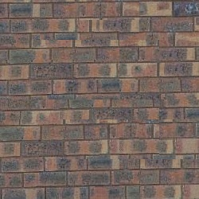
Overlapping Patches Measured by Sum of Squared Differences (SSD)
Original
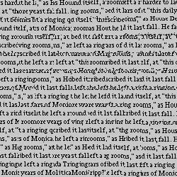
Overlapping Patches Measured by Sum of Squared Differences (SSD)
The image on the right shows the result of the image quilting algorithm with overlapping patches. The seams are less visible compared to the randomly sampled texture, but there are still noticeable artifacts.
Seam Finding
Overall, overlapping patches reduce the visibility of seams, but they do not eliminate them entirely. To address this issue, we can use the minimum error boundary cut algorithm to find the optimal seam between two patches. Such optimal cut is found through dynamic programming. Choosing the patch size seems to be a heuristic. A good patch size should be larger than "the texture item," whatever one defines it to be. For example, if we are sampling the bricks, a nice patch size should be large enough to cover both edges of a brick (the width of a brick).
The following results are generated under patch_size=50, overlap=25, and tolerance=3
Original
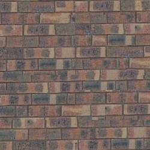
Seam Finding
Original
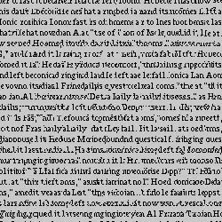
Seam Finding
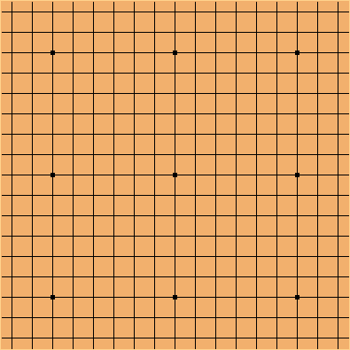
Original
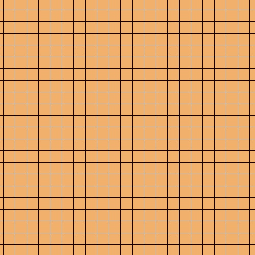
Seam FindingInstead of playing on a 19x19 Go board, now we are playing on 23x23 board!
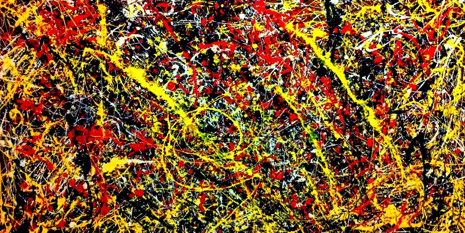
Original Pollock
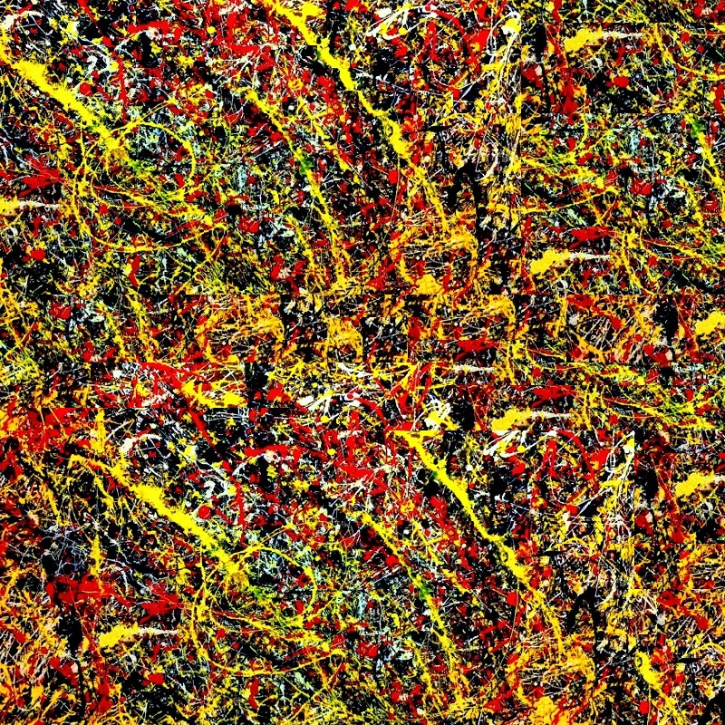
Seam FindingThis is the texture of Pollock!
Here, we show an example of the seam finding process. We first find the location to fill in. Then we find the best patch to fill in. Then, we find the optimal seam between the two patches by getting the best cut illustrated by the vertical mask and horizontal mask combined.
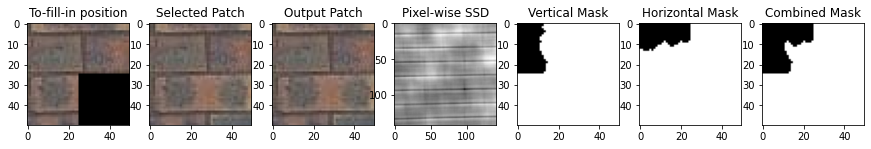
Texture Transfer
Texture transfer is the process of applying the texture of one image to another image. This can be done by synthesizing a texture from the source image and transfering it to the target image. The process involves guidance from the target image. The procedure is very similar to the seam finding process. The modification happens when we calculate ssd of the patches, where we take the ssds between the guidance image patches and the sample image into account. We compute the combined ssd as ssd = alpha * ssd + (1 - alpha) * ssd_guidance We introduce a parameter alpha to indicate the strength of target image. alpha = 0.5 is used in the following cases.
Source Image
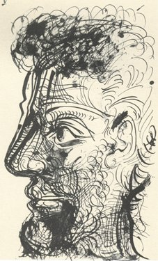
Target Image
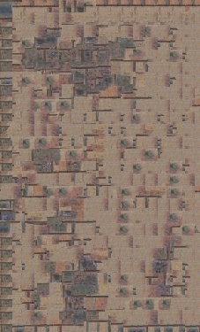
Texture Transfer
Source ImageTarget Image
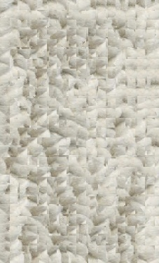
Texture Transfer
Source Image
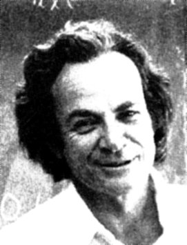
Target Image
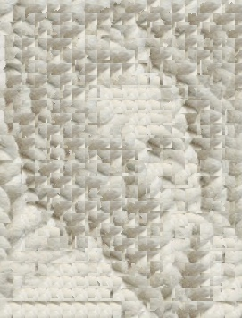
Texture Transfer
Source ImageTarget Image
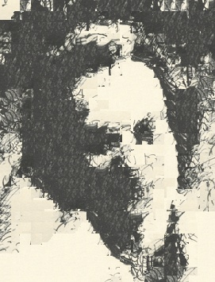
Texture Transfer
The images above show the results of texture transfer from the source image to the target image. The texture of the source image is synthesized and transferred to the target image, creating a new image that combines the texture of the source image with the structure of the target image. Yet, if we zoom in a little bit, we can see the block artifacts. We can address this issue by using the iterative texture transfer method.
Iterative Texture Transfer (Bells and Whistles)
The paper describes a method for texture transfer that iteratively synthesizes a texture from the source image and transfers it to the target image. This process is repeated multiple times to refine the texture transfer as computing ssd now involves ssd's from previous iteration. ssd = alpha * (ssd + ssd_prev) + (1 - alpha) * ssd_guidance
Source ImageTarget ImageTexture transfer (without iteration)
Gradient domain fusion is a technique used to blend images together seamlessly. This project implements the Poisson Blending algorithm. In this algorithm, we want to maximally perserve the gradient of the source region without changing any of the background pixels because human eyes are more sensitive to the gradient than the overall intensity. The overall intensity is ignored in this implementation.
Toy Problem
The setup of solving the Poisson Blending problem is complex so we first solve a toy problem with the following objective:
The least sqaure problem can be solved by constructing a matrix $A$ and a vector $b$ such that $Av = b$. The matrix $A$ is a sparse matrix that represents the constraints of the least sqaure problem. The vector $b$ is the right-hand side of the equation. The solution $v$ is the pixel values of the output image:
For x-gradient constraints:
A[e, im2var[y, x + 1]] = 1
A[e, im2var[y, x]] = -1
b[e] = img[y, x + 1] - img[y, x]
im2var is a mapping from the pixel coordinates to the variable index in the output image. The variable index is used to construct the matrix $A$ and the vector $b$.
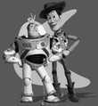
Source ImageOutput Image
These images look identical as expected.
Poisson Blending
For this objective, we need to solve a least sqaured problem:
$$\min_{v} \sum_{i\in S,\ j\in N_i\cap S} ((v_i - v_j) - (s_i - s_j))^2 + \sum_{i\in S,\ j\in N_i\cap -S} ((v_i - t_j) - (s_i - s_j))^2$$
where $v_i$ is the $i$th pixel value of the output image, $s_i$ and $t_i$ are the pixel values of the source and target images, respectively, and $N_i$ is the set of neighboring pixels of $i$. The first term in the sum is the difference between the gradients of the source image and the output image, concerning neighbors inside the source region. The second term is the difference between the gradients of the target image and the output image, concerning neighbors outside the source region. The goal is to find the pixel values $v_i$ that minimize the sum of squared differences between the gradients of the output image and the source and target images.
ObjectBackground
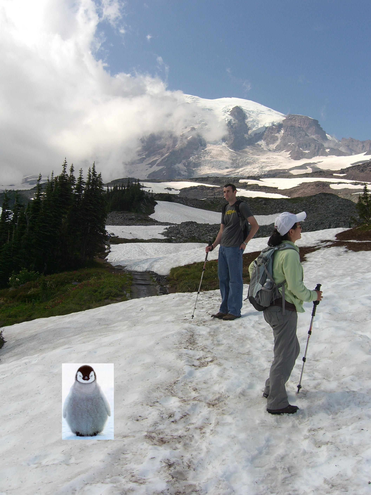
Direct placement
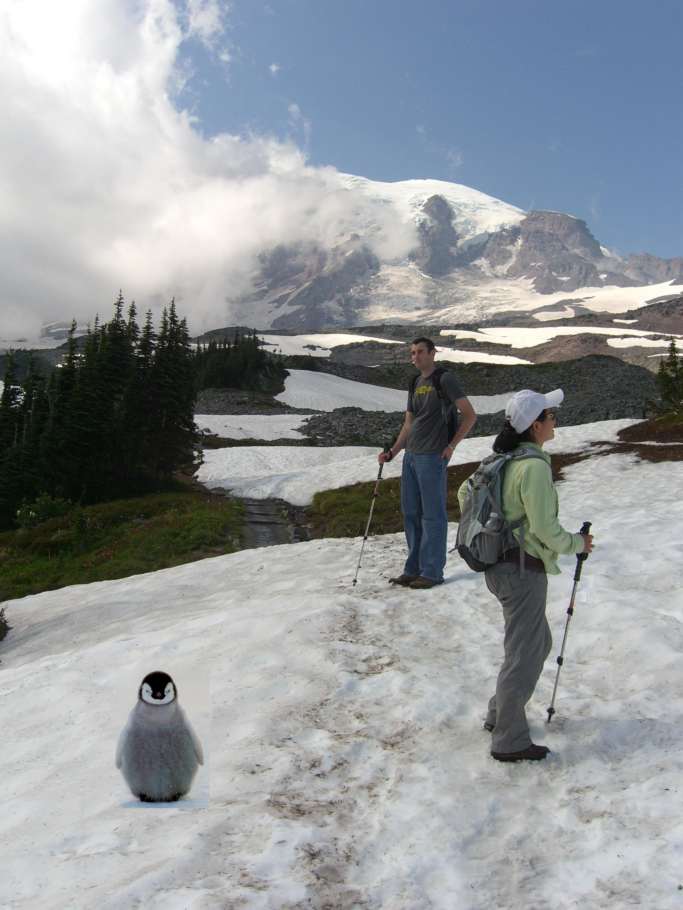
Output
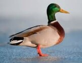
ObjectBackground
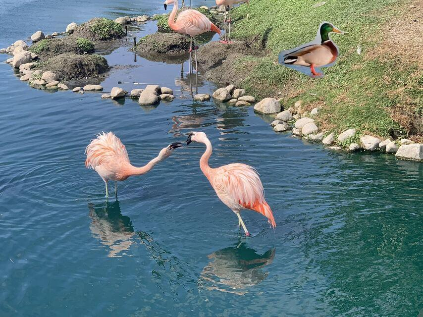
Direct placement
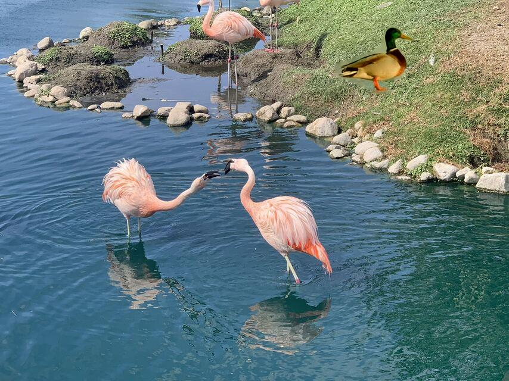
Output
Object
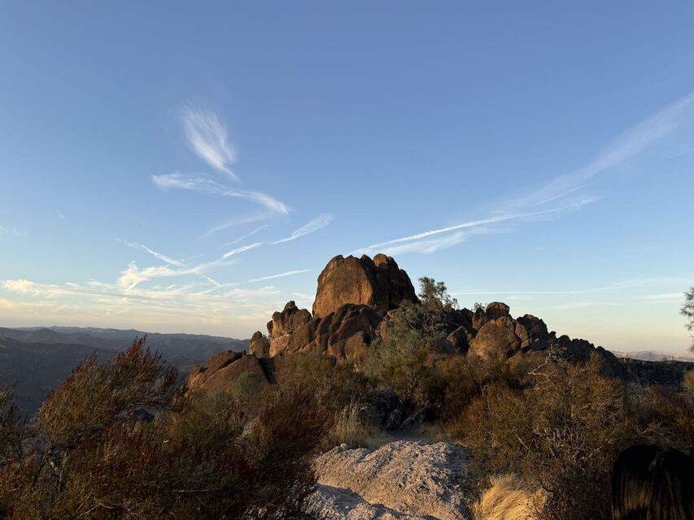
Background
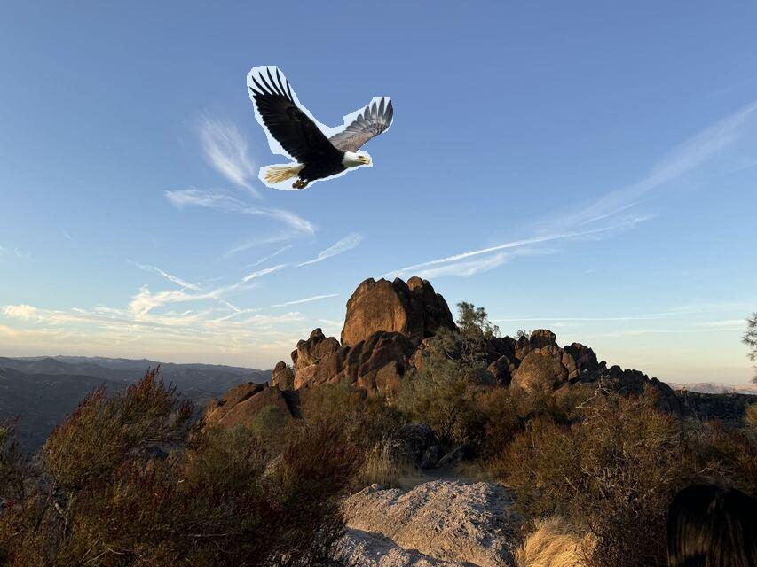
Direct placement
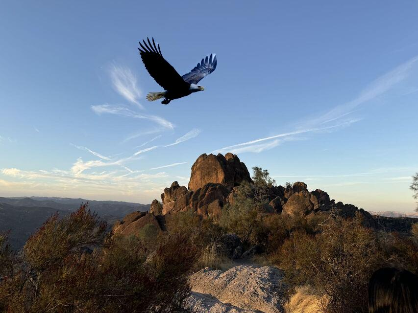
Output
Mixed Gradient (Bells and Whistles)
We now switch to use mixed gradients. The mixed gradient is a combination of the gradients of the source and target images. We pick the stronger gradient between the source and target images for each pixel. The objective is updated as floows:
For this objective, we need to solve a least sqaured problem:
$$\min_{v} \sum_{i\in S,\ j\in N_i\cap S} ((v_i - v_j) - d_{ij})^2 + \sum_{i\in S,\ j\in N_i\cap -S} ((v_i - t_j) - d_{ij})^2$$
$$ d_{ij} = \begin{cases} s_i - s_j & \text{if } |s_i - s_j| > |t_i - t_j| \\ t_i - t_j & \text{otherwise} \end{cases}$$
If we take a closer look at the results of the mixed gradient. The result is better than the Poisson blending results when all the artifacts disappear at the edges of the original objects.